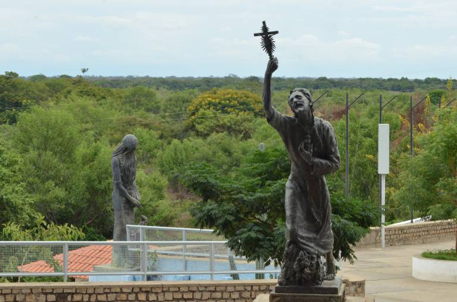
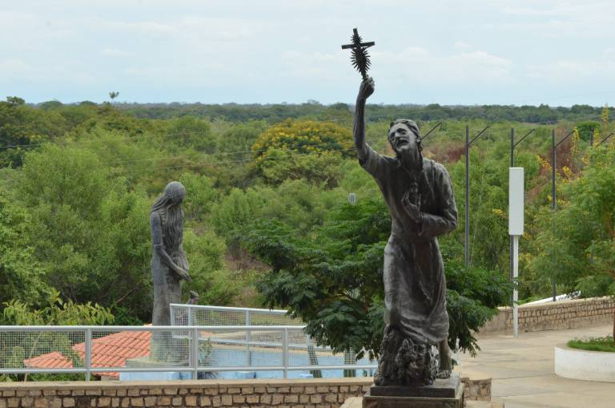

Romaria
 

A Gruta do Bom Jesus é gruta principal, logo na entrada do Santuário e impressiona pelas dimensões, tendo aproximadamente 50m de comprimento, 15m de largura e 7m de altura. Há várias imagens santas espalhadas pela Gruta do Bom Jesus da Lapa, uma delas é a de Nossa Senhora do Perpétuo Socorro, local onde acontece toda quarta-feira a Novena Perpétua, sempre acompanhada por inúmeros fiéis.
Guedes de Brito chegou nessa região, ainda era ocupada por índios e, munido de armas, extinguiu grande parte dessa população, transformando em escravos aqueles que sobreviveram. Guedes de Brito criou uma bandeira com 200 homens e tomou posse dessas terras, com aproximadamente 160 léguas de extensão, divididas em sítios de 1 légua cada, fundando fazendas de gado.
Nos dias de muito calor, nos fins de semana, nos períodos de maior movimento, nas romarias, são esses os cenários propícios a um bom mergulho na prainha de Bom Jesus da Lapa, quando o Rio São Francisco está com as águas baixas.Os romeiros são visitantes frequentes no período de romaria e, juntamente com os próprios moradores da cidade, lotam a a prainha. Se você não conhece, vale a pena conhecer!